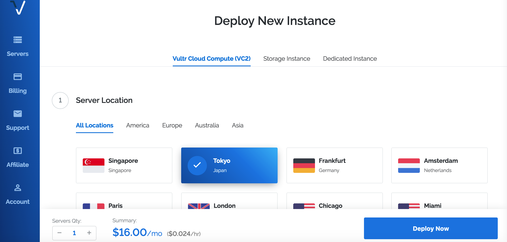
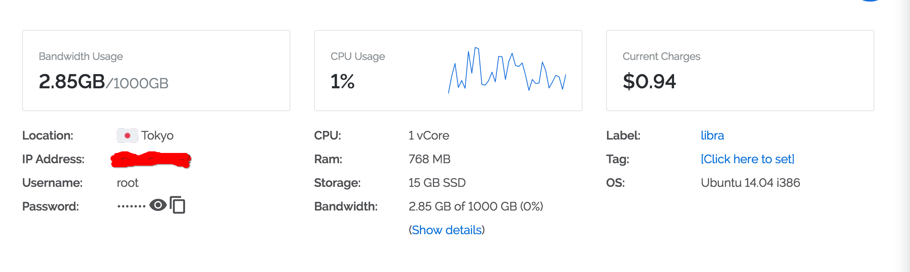
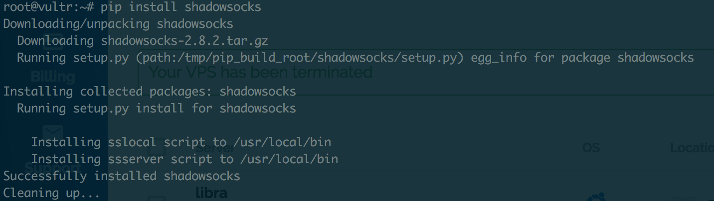
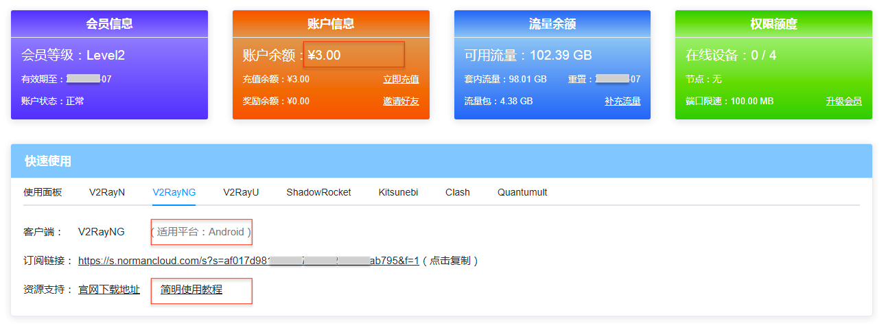
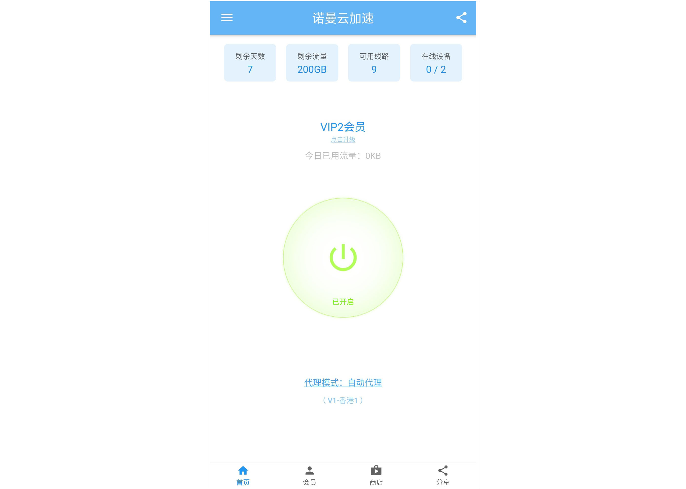

想要正常的访问一些被大陆屏蔽掉的网站或者APP，例如：Instagram、Youtube（国内昵称油管），就需要通过技术手段使你的网络可以突破国内的网络审查，也就是大家耳耳熟能详的：“科学上网”、“翻墙”、“梯子”，“加速器”，“VPN代理” 等等（最专业的说法应该叫做“网络代理”）。
本文教大家安装一种常见的翻墙工具，Shadowsocks，非常适合喜欢动手的同学们钻研使用。每个月服务器成本大概几十块钱，如果比较懒的，最好还是使用专业的网络加速服务商比较简单，比如诺曼云加速器 。
1. 注册一个VPS
首先，我们要选择一家国外的提供商。我使用过的国外的服务有DigtalOcean（后面简称为DO）、vultr、Linode。每家的机器都差不太多，选择一台配置普通点的机器就可以了。一般来说都需要Paypal或者信用卡付款。比如这里使用的是Vultr的服务器。

如图所示，这里作者推荐日本的机器，北京联通非常的稳定可靠，经历了风风雨雨，目前为止还没有封，机器系统选择Ubuntu14.04（这个是根据个人喜好），但是后面的讲解中使用的命令都是用到Ubuntu的命令，所以推荐小白用户选择此系统，后面还有Additional Features, Startup Script , SSH Keys , Server Hostname & Label选项，这些配置各位可以根据自己的需要进行相关的配置，选购完你的机器后就可以deploy你的VPS了。
等待Servers列表你的机器的Status的状态变成了running状态后，点击该机器，进入机器详细介绍页，如图所示

点击Password查看密码，在你的电脑上打开命令行工具，输入：ssh root@服务器的Ip地址。你就拥有了对这个台VPS的root控制权限了。
2. 搭建shadowsocks服务
输入密码后，接着在命令行键入一下命令，开启你的ss服务。我们将会安装python版本的shadowsocks，需要先在这台机器上安装pip管理工具：apt-get install python-pip。
然后通过pip来安装shadowsocks，命令为：pip install shadowsocks。当你看到如下画面时，表示你的ss安装成功。这时，你可以尝试在命令行中键入ssserver命令，查看是否安装成功，安装成功的话就可以进入下一步的操作。

3. 启动shadowsocks服务
开启ss服务有两种方法，一种是通过在命令行中输入参数，如下所示：
1 | ssserver -p 8388 -k password -m aes-256-cfb |
另外一种方法就是通过配置文件启动，先在VPS的/usr/etc/conf/目录下新建一个ss.conf.json文件，写入如下的配置：
1 | { |
上述每一个配置文件每个字段的意义如下：
然后进入你的配置文件的目录，执行以下命令即可
1 | ssserver -c ss.conf.json |
命令启动成功，如果你想在后台运行ss服务，需要输入如下命令
1 | ssserver -c ss.conf.json -d start |
4. 安装shadowsocks客户端
因为各个系统繁杂，其中配置各不相同，笔者也不能一一覆盖到。如果读者不知道改选择什么客户端 ，或者不会是使用。可以登录NormanCloud的官网，可以查看到他们官方推荐的全平台客户端，以及使用指导和教程。对于小白用户而言还是蛮友好的。
5. 使用专业平台的服务
有许多专业平台也在提供网络代理服务，相比于个人搭建而言，平台提供的代理服务器线路更多，稳定性也更强。此外还会有一些额外的好处，比如：有些服务平台提供流媒体解锁，可以看Netflix、HBO、Hulu这些有IP限制的流媒体网站。
网络代理平台每月的售价一般在20 - 30 之间，和自己私人搭建所需要付出的成本基本相当。但是性价比明显更高一些。这里就以其中的一家 “诺曼加速器” 为例给大家介绍下如何实现科学上网。
诺曼云加速器（NormanCloud.com）是一家使用v2ray网络代理技术（一种比较新的代理技术，国内稳定性好）的网络代理服务商，支持所有平台使用：Android、iPhone、Windows或者Mac。使用博主的邀请码（TP4R6）或者点邀请链接：诺曼云官网，点击前往 注册，可以得到5块钱的初始体验资金。可以用于购买体验套餐，免费用一段时间。
这家服务商技术实力比较强，他们有自己研发的客户端软件和APP（目前已经上线的好像只有Android版本）。尽量使用他们家的官方APP，简单方便很多，也更稳定。许多第三方的客户端软件要么不够稳定，要么使用很繁琐（比如需要添加订阅、手动更新订阅等等操作），要么会有一些安全隐私方面的风险。
在诺曼云的会员中心页面，你可以看到自己会员等级（需要先去会员商店，用体验资金买一个体验套餐），账户里的余额，剩下可以用的流量等等信息。

你可以在快速使用面板找到适用于各种平台的客户端软件。比如你需要在Android手机上翻墙，可以在手机浏览器上输入他们的网站：https://normancloud.com，然后下载他们的官方APP（你也可以在他们网站找到其他第三方APP），把APK文件下载到手机上直接点击安装就行了。

网站上所有软件都有相应的教程可以查看，按照教程的每一步，进行操作完成设置就可以开始科学上网了。
诺曼云的会员主要分成两个等级V1和V2，对于只需要简单上上网的人而言，买个V1就足够使用了。根据不同套餐里包含的流量的不同，价格基本在15-25元/月之间。如果你是经常上网看剧看视频，那么流量最好买足一些。如果是以浏览网页为主，那么买他们的低流量套餐就够用了。